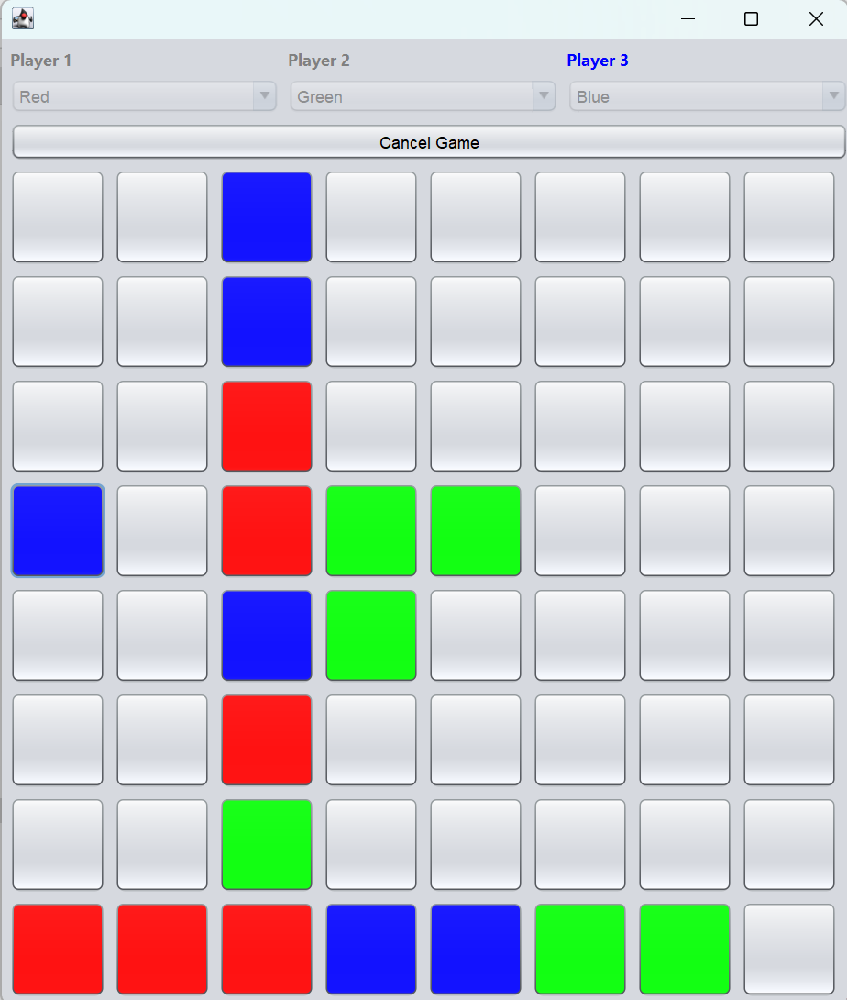

Programming Work Samples
Introduction
The following examples demonstrate my experience applying programming concepts to both independent development and academic coursework.
These projects were selected to highlight different aspects of programming, including application logic, data management, object-oriented design, and problem-solving.
Grain Storage Inventory Display
Language: C#
The Grain Storage Inventory Display uses C# services to manage inventory information, application state, and communication with a PostgreSQL database.
I selected this example because it demonstrates how programming logic supports a larger application, including data retrieval, caching, and handling connectivity issues.
Selected Code Examples
Inventory Service — Data Management
This service manages inventory retrieval and supports the application's caching and fallback functionality.
Application State Management
Supporting services maintain consistent application behaviour between the map and control interfaces.
Competencies Demonstrated
Application programming, data management, systems integration, troubleshooting, and technical problem-solving.
Java Connect Four
Language: Java
This academic programming project involved developing a graphical Connect Four game using Java Swing.
The application uses a two-dimensional array to represent the game board and implements logic to evaluate player moves and identify winning combinations.
I selected this example because it demonstrates fundamental programming concepts, including arrays, loops, conditional statements, and object-oriented application development.
Game Interface

Selected Code Example
Win-Detection Algorithm
This algorithm checks the game board for winning combinations across horizontal, vertical, and diagonal directions.
Competencies Demonstrated
Object-oriented programming, arrays, algorithmic thinking, logical problem-solving, and graphical user interface development.